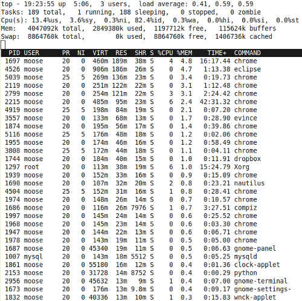

free
I've you want to check your memory consumption on a Linux machine, you can use free.
moose@pc07:~$ free -m
total used free shared buffers cached
Mem: 3952 2832 1119 0 117 1565
-/+ buffers/cache: 1150 2802
Swap: 8656 0 8656
This means: I have a total of 3952 MB RAM, used and free should be clear, shared is memory which is shared between processes, e.g. shared libraries. The "buffers" entry tells you how much of your RAM is being used for disk buffering. Over 8 GB got swapped out.
top
top will give you something like Windows' task manager in the command line. If you press "M" it gets sorted by memory utilization:
{kind=link}

pmap
pmap reports a memory map of a process. Lets make an example. Eclipse has the process ID (pid) 4526 at the moment.
pmap 4526
gives the following output:
4526: /usr/lib/eclipse/eclipse
Address Kbytes Mode Offset Device Mapping
08048000 16 r-x-- 0000000000000000 008:00001 eclipse
0804c000 4 r---- 0000000000003000 008:00001 eclipse
0804d000 4 rw--- 0000000000004000 008:00001 eclipse
096c4000 11608 rw--- 0000000000000000 000:00000 [ anon ]
62e40000 43776 rw--- 0000000000000000 000:00000 [ anon ]
65900000 130944 rw--- 0000000000000000 000:00000 [ anon ]
6d8e0000 87424 rw--- 0000000000000000 000:00000 [ anon ]
72e40000 262144 rw--- 0000000000000000 000:00000 [ anon ]
82e40000 44800 rw--- 0000000000000000 000:00000 [ anon ]
85a00000 512 ----- 0000000000000000 000:00000 [ anon ]
85a80000 216832 rw--- 0000000000000000 000:00000 [ anon ]
92e40000 6312 r--s- 0000000000001000 008:00001 classes.jsa
9346a000 3928 rw--- 0000000000000000 000:00000 [ anon ]
93840000 7412 rw--- 000000000062b000 008:00001 classes.jsa
93f7d000 4876 rw--- 0000000000000000 000:00000 [ anon ]
94440000 904 rw--- 0000000000d68000 008:00001 classes.jsa
94522000 3192 rw--- 0000000000000000 000:00000 [ anon ]
94840000 32 r-xs- 0000000000e4a000 008:00001 classes.jsa
94848000 4064 rw--- 0000000000000000 000:00000 [ anon ]
b17f5000 44 r--s- 0000000000070000 008:00001 org.eclipse.jdt.junit_3.5.2.r352_v20100113-0800.jar
b1800000 144 rw--- 0000000000000000 000:00000 [ anon ]
b1824000 880 ----- 0000000000000000 000:00000 [ anon ]
b1909000 12 ----- 0000000000000000 000:00000 [ anon ]
b190c000 312 rwx-- 0000000000000000 000:00000 [ anon ]
b195a000 12 ----- 0000000000000000 000:00000 [ anon ]
b195d000 312 rwx-- 0000000000000000 000:00000 [ anon ]
b19ab000 12 ----- 0000000000000000 000:00000 [ anon ]
b19ae000 312 rwx-- 0000000000000000 000:00000 [ anon ]
b19fc000 12 ----- 0000000000000000 000:00000 [ anon ]
b19ff000 312 rwx-- 0000000000000000 000:00000 [ anon ]
b1a4d000 16 r-x-- 0000000000000000 008:00001 libattr.so.1.1.0
b1a51000 4 r---- 0000000000003000 008:00001 libattr.so.1.1.0
b1a52000 4 rw--- 0000000000004000 008:00001 libattr.so.1.1.0
b1a53000 24 r-x-- 0000000000000000 008:00001 libfam.so.0.0.0
b1a59000 4 r---- 0000000000006000 008:00001 libfam.so.0.0.0
b1a5a000 4 rw--- 0000000000007000 008:00001 libfam.so.0.0.0
b1a5b000 24 r-x-- 0000000000000000 008:00001 libacl.so.1.1.0
b1a61000 4 r---- 0000000000006000 008:00001 libacl.so.1.1.0
b1a62000 4 rw--- 0000000000007000 008:00001 libacl.so.1.1.0
b1a63000 48 r-x-- 0000000000000000 008:00001 libfile.so
b1a6f000 4 r---- 000000000000b000 008:00001 libfile.so
b1a70000 4 rw--- 000000000000c000 008:00001 libfile.so
b1a71000 100 r--s- 0000000000000000 008:00001 mime.cache
b1a8a000 12 r-x-- 0000000000000000 008:00001 libgpg-error.so.0.4.0
b1a8d000 4 r---- 0000000000002000 008:00001 libgpg-error.so.0.4.0
[...]
b755a000 4 r--s- 0000000000001000 008:00001 runtime_registry_compatibility.jar
b755b000 4 rw--- 0000000000000000 000:00000 [ anon ]
b755c000 28 r-x-- 0000000000000000 008:00001 libvorbisfile.so.3.3.2
b7563000 4 r---- 0000000000006000 008:00001 libvorbisfile.so.3.3.2
b7564000 4 rw--- 0000000000007000 008:00001 libvorbisfile.so.3.3.2
b7565000 16 r-x-- 0000000000000000 008:00001 libcanberra-gtk-module.so
b7569000 4 ----- 0000000000004000 008:00001 libcanberra-gtk-module.so
b756a000 4 r---- 0000000000004000 008:00001 libcanberra-gtk-module.so
b756b000 4 rw--- 0000000000005000 008:00001 libcanberra-gtk-module.so
b756c000 44 r-x-- 0000000000000000 008:00001 eclipse_1208.so
b7577000 4 r---- 000000000000a000 008:00001 eclipse_1208.so
b7578000 4 rw--- 000000000000b000 008:00001 eclipse_1208.so
b7579000 252 r---- 0000000000000000 008:00001 LC_CTYPE
b75b8000 1144 r---- 0000000000000000 008:00001 LC_COLLATE
b76d6000 4 rw--- 0000000000000000 000:00000 [ anon ]
b76d7000 1356 r-x-- 0000000000000000 008:00001 libc-2.11.1.so
b782a000 4 ----- 0000000000153000 008:00001 libc-2.11.1.so
b782b000 8 r---- 0000000000153000 008:00001 libc-2.11.1.so
b782d000 4 rw--- 0000000000155000 008:00001 libc-2.11.1.so
b782e000 16 rw--- 0000000000000000 000:00000 [ anon ]
b7832000 8 r-x-- 0000000000000000 008:00001 libdl-2.11.1.so
b7834000 4 r---- 0000000000001000 008:00001 libdl-2.11.1.so
b7835000 4 rw--- 0000000000002000 008:00001 libdl-2.11.1.so
b7836000 84 r-x-- 0000000000000000 008:00001 libpthread-2.11.1.so
b784b000 4 r---- 0000000000014000 008:00001 libpthread-2.11.1.so
b784c000 4 rw--- 0000000000015000 008:00001 libpthread-2.11.1.so
b784d000 8 rw--- 0000000000000000 000:00000 [ anon ]
b784f000 4 r---- 0000000000000000 000:00000 [ anon ]
b7850000 4 r---- 0000000000000000 008:00001 LC_NUMERIC
b7851000 4 r---- 0000000000000000 008:00001 LC_TIME
b7852000 4 r---- 0000000000000000 008:00001 LC_MONETARY
b7853000 4 r---- 0000000000000000 008:00001 SYS_LC_MESSAGES
b7854000 4 r---- 0000000000000000 008:00001 LC_PAPER
b7855000 4 r---- 0000000000000000 008:00001 LC_NAME
b7856000 4 r---- 0000000000000000 008:00001 LC_ADDRESS
b7857000 4 r---- 0000000000000000 008:00001 LC_TELEPHONE
b7858000 4 r---- 0000000000000000 008:00001 LC_MEASUREMENT
b7859000 28 r--s- 0000000000000000 008:00001 gconv-modules.cache
b7860000 4 r---- 0000000000000000 008:00001 LC_IDENTIFICATION
b7861000 8 rw--- 0000000000000000 000:00000 [ anon ]
b7863000 4 r-x-- 0000000000000000 000:00000 [ anon ]
b7864000 108 r-x-- 0000000000000000 008:00001 ld-2.11.1.so
b787f000 4 r---- 000000000001a000 008:00001 ld-2.11.1.so
b7880000 4 rw--- 000000000001b000 008:00001 ld-2.11.1.so
bfa49000 12 ----- 0000000000000000 000:00000 [ anon ]
bfa4d000 304 rwx-- 0000000000000000 000:00000 [ stack ]
bfa99000 4 rw--- 0000000000000000 000:00000 [ anon ]
mapped: 927836K writeable/private: 881752K shared: 13572K
So at the moment eclipse is using 927MB of virtual memory. But it need "only" about 186 MB real, physical memory. According to virtualthreads.blogspot.com all data segments have the access rights rw--- and all code segments have the rights r-x--.
vmstat
Virtual memory statistics gives you the following information:
Here is the example:
moose@pc07:~$ vmstat
procs -----------memory---------- ---swap-- -----io---- -system-- ----cpu----
r b swpd free buff cache si so bi bo in cs us sy id wa
0 0 0 1120696 119948 1599112 0 0 21 35 416 116 12 5 82 1
--memory-- swpd: sum of the used virtual memory. free: amount of unused physical memory. buff: amount of physical memory which gets used as disc-buffer. cache: amount of physical memory which gets used as cache. --swap-- si: amount of memory which gets loaded from hdd to your RAM. If this is positive, you need more RAM. so: amount of memory which gets loaded from RAM to hdd. --io-- bi: input of block devices bo: output of block devices --system-- in: Number of interrupts per second cs: Context-switches per second --cpu-- us: CPU time spent for user processes sy: CPU time spent for kernel processes id: idle processor time wa: Waiting for input / output
Sources
- LinuxWiki (German)
- cyberciti.biz